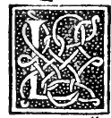
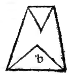
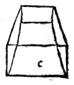
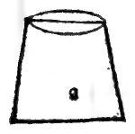
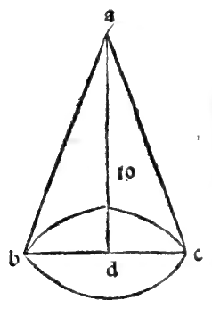

CHAPTER LXVI¶
On the Way and Rule to Know How to Measure Every Complete Pyramid, Round or Lateral.

The true and exact measure of every complete pyramid (pyramide integra), whether round (cone) or lateral (polygonal pyramid), is obtained from the volume of its corresponding column in the following universal manner ([XII.7] Corollary, [XII.10]):
Universal Rule for the Volume of Any Complete Pyramid or Cone ([XII.7], [XII.10])
First find the area of the base of the pyramid by the rules given above for round and lateral columns (Chapters LXII–LXIII), and multiply that base area by the perpendicular altitude (axe / altezza) of the pyramid; the product is the solid volume of the entire corresponding column. Then take one-third (\(\frac{1}{3}\)) of that column’s volume; that third part is infallibly and exactly the solid volume (quantità corporale) of the pyramid:
Let \(abc\) be a round pyramid (cone) whose circular base \(bc\) has diameter \(7\) and whose perpendicular altitude (axis) \(ad\) is \(10\) (see the marginal diagram
0057.g1.png).As we found in Chapter LXII for the round column of diameter \(7\) and altitude \(10\), the area of the circular base is \(\frac{11}{14} \times 49 = 38\frac{1}{2}\), and multiplying by the altitude \(10\) gives \(385\) for the volume of the entire round column.
Taking one-third (\(\frac{1}{3}\)) of \(385\) gives:
\[\frac{385}{3} = 128\frac{1}{3}\]which is the solid volume of the round pyramid!
Distinction Between the Approximation of the Circle and the Exactness of the One-Third Ratio: Note well, most lofty Duke, that although in the round pyramid the numerical area of the circular base uses Archimedes’ close ratio of \(11\) to \(14\) (because the exact quadrature of the circle is not yet known in numbers), nevertheless the geometric ratio of the round pyramid to its round column is not an approximation at all, but is with absolute mathematical precision one-third (:math:`frac{1}{3}`)! For in the tenth of the twelfth (the ninth of the twelfth in Campanus), our philosopher proves demonstratively that every round column (cylinder) is triple (:math:`3 : 1`) its round pyramid (cone) having the same base and equal altitude.
And in all lateral pyramids, because their bases are rectilinear polygons whose areas can be expressed without circular quadrature, both the base area and the volume are exact, and by the seventh of the twelfth (and the eighth of the twelfth in Campanus), every lateral column is exactly triple (:math:`3 : 1`) its lateral pyramid.
Marginal Woodcut Diagrams (Paganini 1509)¶

Folio 0056 Diagram 4¶

Folio 0056 Diagram 5¶

Folio 0056 Diagram 6¶

Folio 0056 Diagram 7¶